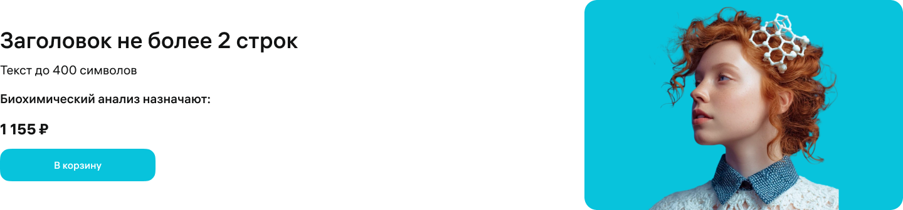
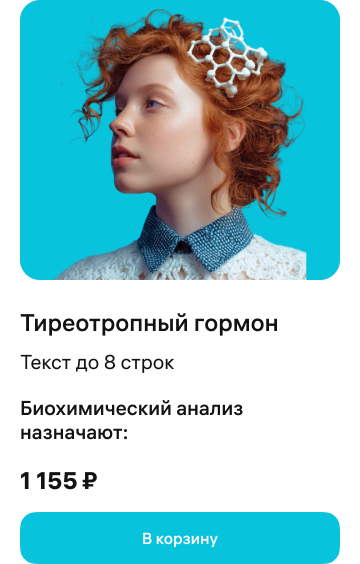
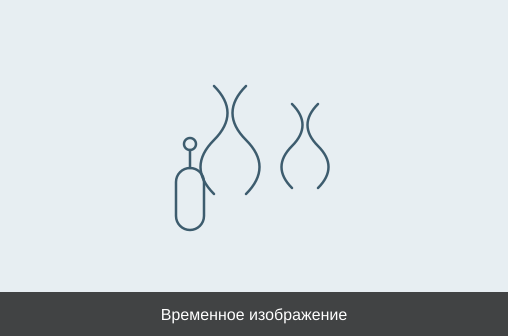

От пренатального скрининга до аллергодиагностики
Познакомьтесь с исследованиями ИНВИТРО для разных диагностических задач. Коротко о каждом тесте, его особенностях и материалах для врачей.
Это сверка двух секций с вариантами Secondary slide из файла Figma. Фрагмент не является финальным лендингом, интеграцией в личный кабинет и подтверждением, что так устроен рабочий конструктор. Изображения в слотах временные.

Познакомьтесь с исследованиями ИНВИТРО для разных диагностических задач. Коротко о каждом тесте, его особенностях и материалах для врачей.

Познакомьтесь с исследованиями ИНВИТРО для разных диагностических задач. Коротко о каждом тесте, его особенностях и материалах для врачей.

№ 6НИПТ оценивает риск хромосомных нарушений у плода по крови беременной. Расширенная программа включает анеуплоидии всех хромосом и 60 микроделеционных и микродупликационных синдромов. Отдельные показатели зависят от особенностей беременности. Результат оценивает риск и не устанавливает диагноз.
№ 6НИПТ оценивает риск хромосомных нарушений у плода по крови беременной. Расширенная программа включает анеуплоидии всех хромосом и 60 микроделеционных и микродупликационных синдромов. Отдельные показатели зависят от особенностей беременности. Результат оценивает риск и не устанавливает диагноз.
| Тема | Что видно в Figma | Свойства компонента Figma | Рабочий конструктор |
|---|---|---|---|
| Вариант | Image Right, Image Left и один мобильный Mobile Default | Это опубликованные варианты набора Secondary slide | Не проверялся |
| Ширина | Мастер десктопа 1440, мобильный 360. На странице-примере экземпляры уже из-за полей родителя | У мастера ширина фиксированная. На странице-примере экземпляр стоит как Fill | Поведение в кабинете неизвестно. 1170 не проверялась |
| Кнопка и ссылка | Одна основная кнопка, в мастере подпись «В корзину» | Кнопку можно включить, подпись — текстовое свойство. Отдельного свойства адреса нет | Связь кнопки с адресом или якорем в рабочем конструкторе не проверена. В прототипе ссылка поставлена |
| Изображение | Отдельный слот со скруглением 20: 508×336 на десктопе, 320×280 на мобильном | Слот Image Placement, размеры Default и обрезка во фрейме варианта | Замена изображения в конструкторе не проверена |
| Материалы | У слайда одна кнопка, не список записей | Количество кнопок свойствами ограничено основной и дополнительной | Один проверенный материал на кнопку — гипотеза для конструктора, не подтверждение |
Стиль ещё не утверждён. Ниже одно направление для согласования, не обязательное решение: единая серия научных иллюстраций на спокойном светлом фоне. Направление можно сменить на предметную фотографию, если так будет понятнее различать темы. Серия из семи фотографий пробирок не предлагается.
Остальные материалы для врачей этим фрагментом не закрыты. У НИПТ через кнопку слайда выведена одна проверенная запись. Для остальных исследований способ показа материалов пока не выбран: это открытый вопрос, а не отказ от раздела.